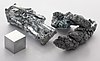

zinc

Definition: Zinc is a chemical element with the symbol Zn and atomic number 30. Zinc is a slightly brittle metal at room temperature and has a shiny-greyish appearance when oxidation is removed. It is the first element in group 12 (IIB) of the periodic table. In some respects, zinc is chemically similar to magnesium: both elements exhibit only one normal oxidation state (+2), and the Zn2+ and Mg2+ ions are of similar size. Zinc is the 24th most abundant element in Earth's crust and has five stable isotopes. The most common zinc ore is sphalerite (zinc blende), a zinc sulfide mineral. The largest workable lodes are in Australia, Asia, and the United States. Zinc is refined by froth flotation of the ore, roasting, and final extraction using electricity (electrowinning).
Source: Wikipedia
Wikipedia Page (Something wrong with this association? Let us know.)
Wikidata Page (Something wrong with this association? Let us know.)